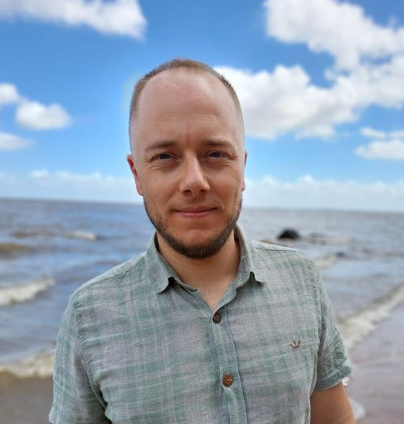

André L. Luza

André is a postdoctoral fellow (INRAE / U Bordeaux) in statistical ecology with Frédéric Barraquand and Didier Alard (Biogeco and FAUNA), analysing butterfly species distributions in the Nouvelle Aquitaine region and improving models to do so. Currently he investigates parameter estimability and identifiability of site-occupancy models, a class of hierarchical models useful under imperfect and variable detection. He also hopes to develop data integration models. His research is funded by the French Office for Biodiversity (OFB).
André has broad ecological interests, and he has worked on a wide range of topics and organisms within ecology and evolution, focusing especially on interfaces between subdisciplines (e.g., ecology-epidemiology, macroecology-macroevolution-paleontology, functional ecology-fisheries-food security).
Selected publications:
Luza, A. L., Barneche, D. R., Cordeiro, C. A. M. M., Dambros, C. S., Ferreira, C. E. L., Floeter, S. R., Giglio, V. J., Luiz, O. J., Mendes, T. C., Picolotto, V. A. P., Quimbayo, J. P., Silva, F. C., Waechter, L., Longo, G. O., & Bender, M. G. Going across taxa in functional ecology: Review and perspectives of an emerging field. Functional Ecology 2023, 37(12), 3091-3110.
Luza, A.L., Rodrigues, A.V., Mamalis, L., Zulian, V. Spatial distribution of the greater rhea, Rhea americana (Linnaeus, 1758), in Rio Grande do Sul, southern Brazil: citizen-science data, probabilistic mapping, and comparison with expert knowledge. Ornithology Research 2023, 31, 253–264.
Eggertsen L., Luza A., Cordeiro C.A.M.M., Dambros C., Ferreira C.E.L., et al. Complexities of reef fisheries in Brazil: a retrospective and functional approach Rev Fish Biol Fisheries 2024, 34, 511–538.
Waechter, L. S., Luza, A. L., Eggertsen, L., Quimbayo, J. P., Hanazaki, N., Pinheiro, H. T., … & Bender, M. G. (2024). The aesthetic value of Brazilian reefs: from species to seascape. Ocean & Coastal Management 2023, 247, 106882.
Luza, A. L., Aued, A. W., Barneche, D. R., Dias, M. S., Ferreira, C. E., Floeter, S. R., … & Bender, M. G. Functional diversity patterns of reef fish, corals and algae in the Brazilian biogeographical province. Journal of Biogeography 2023, 50(6), 1163-1176.
Luza, A.L., Quimbayo, J.P., Ferreira, C.E., Floeter, S.R., Francini-Filho, R. B., Bender, M.G., & Longo, G.O. Low functional vulnerability of fish assemblages to coral loss in Southwestern Atlantic marginal reefs. Scientific Reports 2022, 12(1), 1-12.
Other collaborations
Rede PPBio IntegraMar,Reef Synthesis Working Group, Mariana Bender, Cristian Dambros, Vinicius Bastazini, Miguel Mies, Renan Maestri, Fernando d’Horta.
Contact
andre (hyphen) luis (dot) luza at u-bordeaux.fr
andre (hyphen) luis (dot) luza at inrae.fr